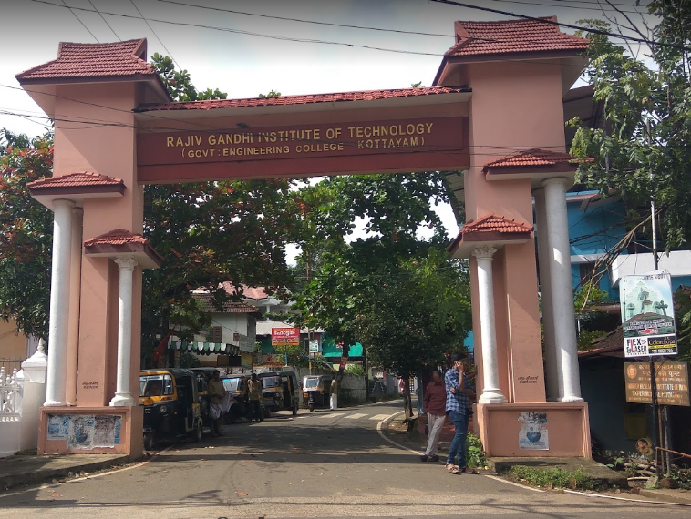

Rajiv Gandhi Institute of Technology, named after the late Prime Minister Sri Rajiv Gandhi, run by the Government of Kerala, started functioning in 1991. It has established a vast infrastructure and put together a team of dedicated teachers. The institution has become one of the leading technical Institutes in Kerala.
All courses offered by RIT are affiliated to APJ Abdul Kalam Technological University and approved by the All India Council for Technical Education (AICTE). The B. Tech programmes are of 8 semester (4 year) duration. The B. Arch programme is of 10 semester (5 year) duration. The M. Tech programmes are of 4 semester (2 year) duration, and the MCA programme is of 4 semeste (2 year) duration.
| UG | ||
|---|---|---|
| COURSE | DEPARTMENT | INTAKE |
| B. Tech | Civil Engineering | 66 |
| Mechanical Engineering | 66 | |
| Computer science | 66 | |
| Electronice & Communication | 66 | |
| B.Arh | Architecture | 40 |